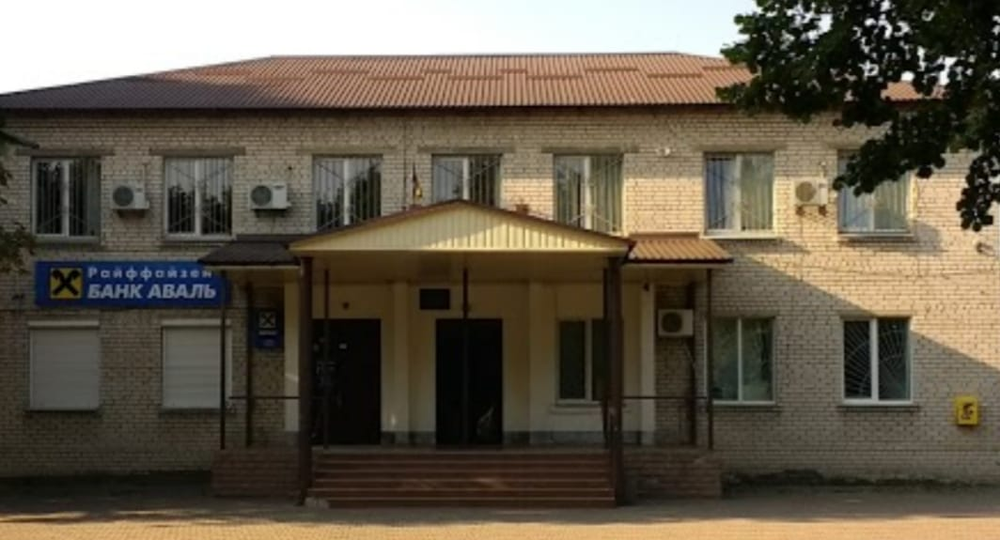

Від депутата Катерини Прищепи , Демидів ...
До мене, як до депутата, часто звертаються з проханням дізнатись
як отримати ту чи іншу довідку, як потрапити до необхідного спеціаліста,
в які дні прийом в Димерській селищній раді.
сьогодні мені надіслали інформацію, ділюсь :
Прийомні дні понеділок та середа з 8:00 год. до 13:00 год. В селищній раді в прийомні дні завжди є чергова особа, яка приймає громадян та в подальшому направляє людину до відповідного спеціаліста.
Телефони:
3-10-13 секретар селищної ради Іванова Людмила Дмитрівна;
3-13-85 секретар виконкому Калашнікова Лілія Давидівна, за цим же номером телефону отримати інформацію можна від Денисової Світлани Михайлівни (житлові питання), Давиденко Людмила Володимирівна (з питань соціального захисту), Мельниченко Наталія Сергіївна, до неї можна звернутися по юридичним питанням;
3-15-90 державний реєстратор Сапон Сергій Вікторович;
3-11-15 начальник військово-облікового столу Гончар Ігор Михайлович.
3-12-19 землевпорядник Кокорева Ольга Володимирівна
Офіційні контакти селищної ради Димерської ОТГ :
Адреса :
07330, Київська обл, Вишгородський р-н, смт Димер, вул. Соборна, 19
Телефон :
04596-31385, 04596-31366
E=Mail :
dymer.rada@gmail.com
FfceBook :
https://facebook.com/rada.Dymer
Прийомні дні понеділок та середа з 8:00 год. до 13:00 год. В селищній раді в прийомні дні завжди є чергова особа, яка приймає громадян та в подальшому направляє людину до відповідного спеціаліста.
Телефони:
3-10-13 секретар селищної ради Іванова Людмила Дмитрівна;
3-13-85 секретар виконкому Калашнікова Лілія Давидівна, за цим же номером телефону отримати інформацію можна від Денисової Світлани Михайлівни (житлові питання), Давиденко Людмила Володимирівна (з питань соціального захисту), Мельниченко Наталія Сергіївна, до неї можна звернутися по юридичним питанням;
3-15-90 державний реєстратор Сапон Сергій Вікторович;
3-11-15 начальник військово-облікового столу Гончар Ігор Михайлович.
3-12-19 землевпорядник Кокорева Ольга Володимирівна
Офіційні контакти селищної ради Димерської ОТГ :
Адреса :
07330, Київська обл, Вишгородський р-н, смт Димер, вул. Соборна, 19
Телефон :
04596-31385, 04596-31366
E=Mail :
dymer.rada@gmail.com
FfceBook :
https://facebook.com/rada.Dymer
Джерела інформаціі: Відкритий Інтернет та FaceBook ... :